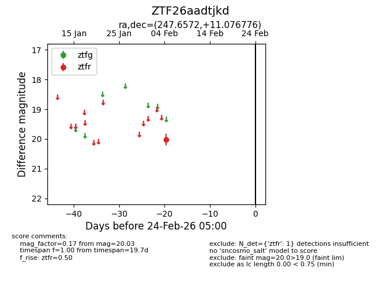
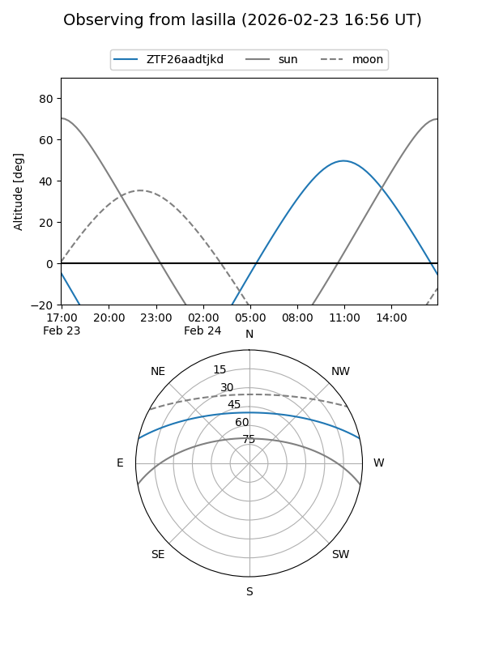
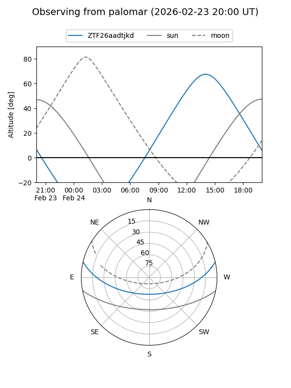

ZTF26aadtjkd
Target ZTF26aadtjkd at 2026-02-24 09:08
Aliases and brokers:
FINK: link
Lasair: link
ALeRCE: link
alt names
ZTF26aadtjkd (ztf,fink_ztf)
Coordinates:
equatorial (ra, dec) = 247.6572,+11.07678
equatorial (HMS+DMS) = 16:30:37.73,+11:04:36.39
galactic (l, b) = (26.7419,+36.23471)
Flags:
Photometry:
last ztfr=20.03
1 ztfr detections
Lightcurve

Visibility


Additional plots